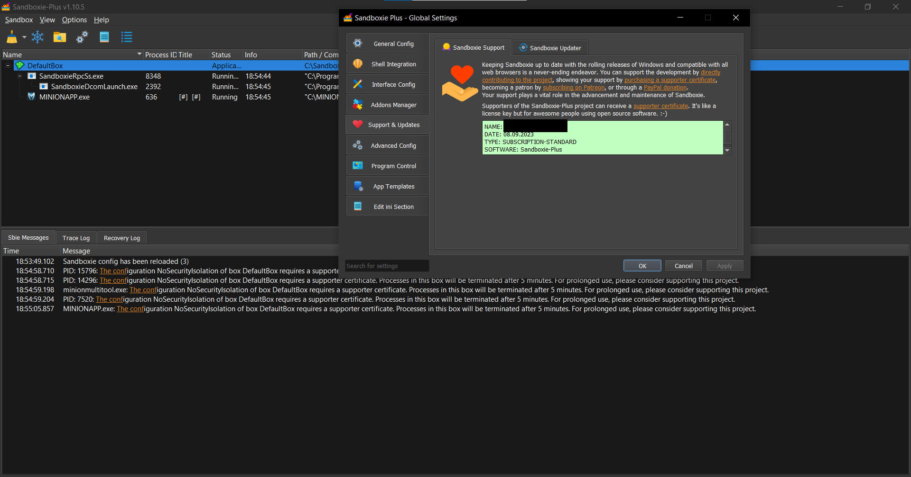

Page 1 of 2
Paid for Patreon Supporter Certificate, but getting error for supporter feature as if I had no certificate.
Posted: Fri Aug 11, 2023 10:05 pm
by Robjohn37
Hello everyone.
I wanted to try a certificate for a month to see if the extra features fit my needs, but I'm having a problem.

This is what I get, even after adding my supporter certificate through the settings.
I tried searching for anything relevant to this on Google but it looks like I'm the only one having this issue.
Let me know if there's anything else I can provide. The e-mail associated with my Patreon is the same e-mail I used to register here.
Re: Paid for Patreon Supporter Certificate, but getting error for supporter feature as if I had no certificate.
Posted: Sat Aug 12, 2023 4:22 am
by bastik-1001
Did Sandman.exe (the new Sandboxie UI) create a
in the root folder of its installation?
I don't know if Patreon or different types of certificates are structured differently, but it has to be pasted in there with all the characters. The user interface should tell you if the certificate isn't valid or that it has to be pasted into the dialog box completely. Therefore, the certificate.dat should have been created, and the input field of the support page should have a green background. (Please DO NOT screenshot that, without covering any of these details.)
The
About Sandboxie-Plus dialog in the help menu states: This copy of (...) is certified for: Name.
Re: Paid for Patreon Supporter Certificate, but getting error for supporter feature as if I had no certificate.
Posted: Sat Aug 12, 2023 5:25 am
by Robjohn37
I was doing more testing. I used the portable version this time.
Can confirm that the certificate.dat exists and I didn't have any problems this time
I will reinstall Sandboxie and check for the certificate again.
Re: Paid for Patreon Supporter Certificate, but getting error for supporter feature as if I had no certificate.
Posted: Sat Aug 12, 2023 5:36 am
by Robjohn37
Alright I reinstalled it and the problem doesn't exist anymore. I'm wondering if it takes a full 12-24 hours for a Patreon certificate to be valid.
Re: Paid for Patreon Supporter Certificate, but getting error for supporter feature as if I had no certificate.
Posted: Sat Aug 12, 2023 5:52 am
by bastik-1001
(I moved this out of bug reports.)
Nice that it works, now.
Ad far as I know, the certificate should be valid as soon as they are sent out. David knows more about that since he added the certificate, that is required for some functions, to finance the project. If there would be a time in which the certificate can't be applied, it seems advisable to state this in the message with which the certificate is sent out.
Re: Paid for Patreon Supporter Certificate, but getting error for supporter feature as if I had no certificate.
Posted: Sat Aug 26, 2023 6:32 pm
by DavidXanatos
Robjohn37 wrote: ↑Sat Aug 12, 2023 5:36 am
Alright I reinstalled it and the problem doesn't exist anymore. I'm wondering if it takes a full 12-24 hours for a Patreon certificate to be valid.
There is no online validation of certificates if you get one it should work out right.
The only problem I know of is that new patreones need to wait sometimes some time before the server will recognize their email and send out a certificate.
But that's an issue of getting one not of them working once got.
Re: Paid for Patreon Supporter Certificate, but getting error for supporter feature as if I had no certificate.
Posted: Fri Sep 08, 2023 4:08 pm
by LiLThuG
Having the same issue.
Even though I paid for the subscription, I am unable to use it as Application compartment box type.

Re: Paid for Patreon Supporter Certificate, but getting error for supporter feature as if I had no certificate.
Posted: Sat Sep 09, 2023 9:16 am
by bastik-1001
@LiLThuG, please try again, after upgrading to Sandboxie Plus 1.11.2, as this release fixes an issue with your type of certificate.
Re: Paid for Patreon Supporter Certificate, but getting error for supporter feature as if I had no certificate.
Posted: Sun Sep 10, 2023 11:14 am
by LiLThuG
bastik-1001 wrote: ↑Sat Sep 09, 2023 9:16 am
@LiLThuG, please try again, after upgrading to Sandboxie Plus 1.11.2, as this release fixes an issue with your type of certificate.
Working now.
Thanks
Re: Paid for Patreon Supporter Certificate, but getting error for supporter feature as if I had no certificate.
Posted: Mon Sep 18, 2023 2:17 pm
by yihauli
Having the same issue.
I got the Patreon Supporter Certificate, but it only provides the user's name,date,type,software,updateket and UPDATEKEY.
But the program requires me to enter the serial number, i can't find it.

- 螢幕擷取畫面 2023-09-18 221200.png (56.08 KiB) Viewed 7987 times

- 螢幕擷取畫面 2023-09-18 221131.png (40.74 KiB) Viewed 7987 times